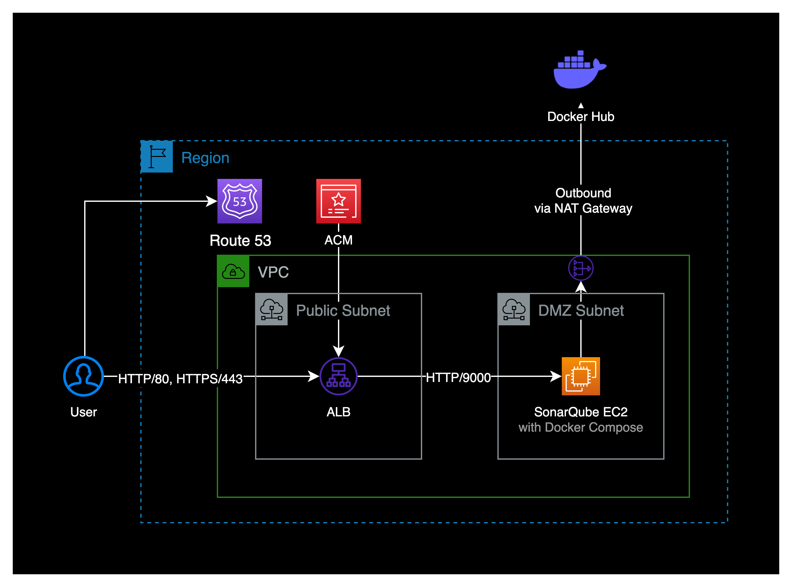
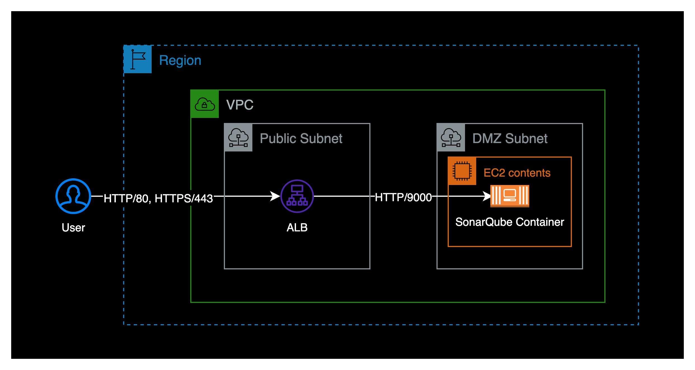
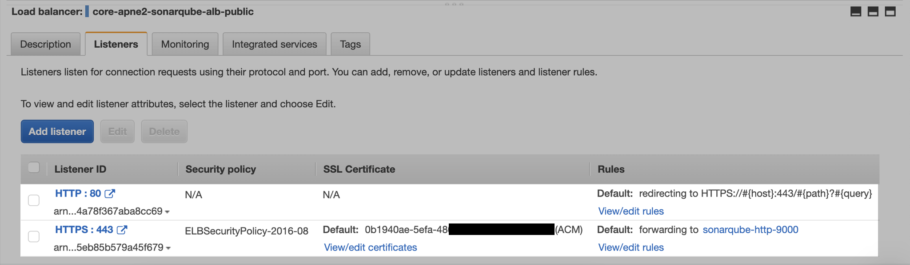
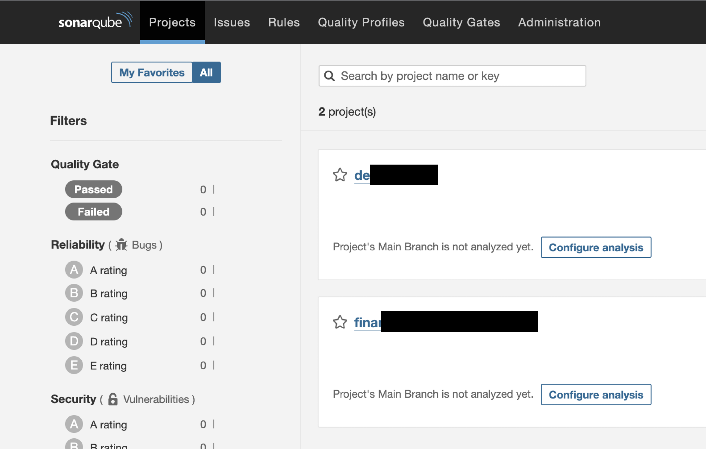

SonarQube EC2 설치
개요
Amazon Linux 2 인스턴스에 SonarQube 서버를 구축하는 방법을 소개합니다.
SonarQube 서버는 docker-compose 컨테이너 기반 환경으로 구축했습니다.
환경
처음에 구축하는 시점에는 제가 ECS라는 서비스에 아직 익숙하지 않았던 시점이라 EC2 기반으로 구축했습니다.

만약 ECS Fargate 워크로드에 구축하고 싶다면 제가 작성한 이 포스트를 참조하세요.
- 인스턴스 : EC2 (t3.medium)
- SonarQube에서 요구하는 최소 메모리 스펙은 소나큐브에서 사용할 메모리 2GB + OS의 여유 메모리 1GB입니다.
- EBS : gp3 / 30GB
- OS : Amazon Linux 2 (x86_64)
- AMI ID : ami-0c76973fbe0ee100c
- Docker : 20.10.17
- Docker Compose : v2.12.0
- 로드밸런서 : Application Load Balancer (Internet facing)
- 도메인 기반의 ACM 인증서를 발급받은 후 sonarqube 웹 도메인 기반으로 SSL 인증서 연결한 상태입니다.
설치하기
인스턴스 환경 확인
SonarQube를 설치할 EC2 인스턴스를 생성합니다.
현재 인스턴스의 운영체제는 Amazon Linux 2 (x86_64)입니다.
CPU 아키텍처 정보를 확인합니다.
$ arch
x86_64
x86_64 기반 AMI입니다.
OS 정보를 확인합니다.
$ grep -E -w 'VERSION|NAME|PRETTY_NAME' /etc/os-release
NAME="Amazon Linux"
VERSION="2"
PRETTY_NAME="Amazon Linux 2"
현재 인스턴스에 설치된 OS는 Amazon Linux 2입니다.
소나큐브는 공식문서 상에서 효율적으로 실행하기 위해 최소 2GB의 RAM과 OS를 위한 1GB의 여유 RAM을 필요로 합니다.
SonarQube 공식문서
docker 설치
EC2 인스턴스에 도커를 설치합니다.
$ sudo amazon-linux-extras install docker
$ sudo service docker start
# EC2 유저를 docker 그룹에 추가해서 docker를 사용할 수 있도록 구성
$ sudo usermod -a -G docker ec2-user
# 재부팅 시 docker 자동시작 설정
$ sudo chkconfig docker on
# git 설치 (optional)
$ sudo yum install -y git
# docker 자동시작 검증을 위해 reboot
$ reboot
위 명령어는 이 글을 참조했습니다.
docker-compose 설치
EC2 인스턴스에 도커 컴포즈를 설치합니다.
EC2 인스턴스가 패키지 설치를 위해서 NAT Gateway, Internet Gateway 등을 통해 퍼블릭 인터넷에 접속할 수 있는 상태여야 합니다.
도커 컴포즈 설치는 특정 버전으로 설치하거나 최신 버전으로 설치하는 방법 2가지가 있습니다.
# docker-compose 특정버전 설치
$ sudo curl \
-L https://github.com/docker/compose/releases/download/2.12.0/docker-compose-$(uname -s)-$(uname -m) \
-o /usr/local/bin/docker-compose
# docker-compose 최신버전(latest) 설치
$ sudo curl \
-L https://github.com/docker/compose/releases/latest/download/docker-compose-$(uname -s)-$(uname -m) \
-o /usr/local/bin/docker-compose
제 경우 최신 버전의 docker-compose를 설치했습니다.
도커 컴포즈 설치 완료 후에는 도커와 도커 컴포즈 버전을 확인합니다.
$ docker-compose version
Docker Compose version v2.12.0
2022년 10월 21일 기준 도커 컴포즈 최신 버전인 v2.12.0을 설치가 된 걸 확인할 수 있습니다.
$ docker version
...
Server:
Engine:
Version: 20.10.17
SonarQube 설치
현재 커널 파라미터의 설정 정보를 확인합니다.
sysctl vm.max_map_count
sysctl fs.file-max
ulimit -n
ulimit -u
소나큐브를 리눅스 서버에 설치하는 경우, 커널 파라미터가 아래와 같아야 합니다.
SonarQube 공식문서
| 파라미터 | 필요 조건 | 관련 설정파일 |
|---|---|---|
| vm.max_map_count | 524288 이상 | /etc/sysctl.conf |
| fs.file-max | 131072 이상 | /etc/sysctl.conf |
| ulimit -n | 131072 이상 | /etc/security/limits.conf |
| ulimit -u | 8192 이상 | /etc/security/limits.conf |
ulimit -n <number>은 open files의 개수를 설정하는 명령어입니다.
ulimit -u <number>는 max user processes의 개수를 설정하는 명령어입니다.
커널 파라미터를 설정합니다.
sysctl -w vm.max_map_count=524288
sysctl -w fs.file-max=131072
ulimit -n 131072
ulimit -u 8192
위 방법의 경우 서버 리부팅 시 초기화되기 때문에, 리부팅 후에도 커널 파라미터를 지속 적용하고 싶다면 공식문서를 바탕으로 설정파일에 직접 입력해야 합니다.
vm.max_map_count 파라미터 값이 너무 낮을 경우 sonarqube 컨테이너가 시작될 때 오류 발생하면서 down 되버릴 수도 있습니다.
도커 컴포즈 파일을 생성합니다.
아래는 sonarqube에서 공식적으로 제공하는 docker compose 파일입니다.
cat << EOF > ./sonarqube-dc.yaml
version: "3"
services:
sonarqube:
image: sonarqube:community
hostname: sonarqube
container_name: sonarqube
depends_on:
- db
environment:
SONAR_JDBC_URL: jdbc:postgresql://db:5432/sonar
SONAR_JDBC_USERNAME: sonar
SONAR_JDBC_PASSWORD: sonar
volumes:
- sonarqube_data:/opt/sonarqube/data
- sonarqube_extensions:/opt/sonarqube/extensions
- sonarqube_logs:/opt/sonarqube/logs
ports:
- "9000:9000"
db:
image: postgres:12
hostname: postgresql
container_name: postgresql
environment:
POSTGRES_USER: sonar
POSTGRES_PASSWORD: sonar
POSTGRES_DB: sonar
volumes:
- postgresql:/var/lib/postgresql
- postgresql_data:/var/lib/postgresql/data
volumes:
sonarqube_data:
sonarqube_extensions:
sonarqube_logs:
postgresql:
postgresql_data:
EOF
작성한 도커 컴포즈 파일이 위치한 경로로 이동한 후 아래 명령어를 실행합니다.
$ docker-compose -f sonarqube-dc.yaml up -d
정상적으로 구동이 완료된 경우 로그 마지막에 SonarQube is operational이 출력됩니다.
$ docker logs -f sonarqube
...
2022.10.20 04:56:51 INFO ce[][c.z.h.HikariDataSource] HikariPool-1 - Start completed.
2022.10.20 04:56:53 INFO ce[][o.s.s.p.ServerFileSystemImpl] SonarQube home: /opt/sonarqube
2022.10.20 04:56:53 INFO ce[][o.s.c.c.CePluginRepository] Load plugins
2022.10.20 04:56:55 INFO ce[][o.s.c.c.ComputeEngineContainerImpl] Running Community edition
2022.10.20 04:56:55 INFO ce[][o.s.ce.app.CeServer] Compute Engine is started
2022.10.20 04:56:55 INFO app[][o.s.a.SchedulerImpl] Process[ce] is up
2022.10.20 04:56:55 INFO app[][o.s.a.SchedulerImpl] SonarQube is operational
컨테이너 상태를 확인합니다.
아래는 정상적으로 구동된 SonarQube 컨테이너 정보입니다.
$ docker ps
CONTAINER ID IMAGE COMMAND CREATED STATUS PORTS NAMES
54c6909e5791 sonarqube:community "/opt/sonarqube/bin/…" 3 days ago Up 3 days 0.0.0.0:9000->9000/tcp, :::9000->9000/tcp sonarqube
61b96d5cf064 postgres:12 "docker-entrypoint.s…" 3 days ago Up 3 days 5432/tcp postgresql
EC2 인스턴스에 접속한 상태에서 localhost로 SonarQube 메인 페이지를 호출해봅니다.
소나큐브는 기본 포트로 9000번을 사용합니다.
$ curl http://localhost:9000
메인 페이지를 정상적으로 호출한 결과는 다음과 같이 나옵니다.
<!DOCTYPE html>
<html lang="en">
<head>
<meta http-equiv="content-type" content="text/html; charset=UTF-8" charset="UTF-8" />
<meta http-equiv="X-UA-Compatible" content="IE=edge">
<link rel="apple-touch-icon" href="/apple-touch-icon.png">
<link rel="apple-touch-icon" sizes="57x57" href="/apple-touch-icon-57x57.png">
<link rel="apple-touch-icon" sizes="60x60" href="/apple-touch-icon-60x60.png">
<link rel="apple-touch-icon" sizes="72x72" href="/apple-touch-icon-72x72.png">
<link rel="apple-touch-icon" sizes="76x76" href="/apple-touch-icon-76x76.png">
<link rel="apple-touch-icon" sizes="114x114" href="/apple-touch-icon-114x114.png">
<link rel="apple-touch-icon" sizes="120x120" href="/apple-touch-icon-120x120.png">
<link rel="apple-touch-icon" sizes="144x144" href="/apple-touch-icon-144x144.png">
<link rel="apple-touch-icon" sizes="152x152" href="/apple-touch-icon-152x152.png">
<link rel="apple-touch-icon" sizes="180x180" href="/apple-touch-icon-180x180.png">
<link rel="icon" type="image/x-icon" href="/favicon.ico">
<meta name="application-name" content="SonarQube" />
<meta name="msapplication-TileColor" content="#FFFFFF" />
<meta name="msapplication-TileImage" content="/mstile-512x512.png" />
<title>SonarQube</title>
<link rel="stylesheet" href="/js/out5N4MCG76.css" />
</head>
<body>
<div id="content">
<div class="global-loading">
<i class="spinner global-loading-spinner"></i>
<span aria-live="polite" class="global-loading-text">Loading...</span>
</div>
</div>
<script>
window.baseUrl = '';
window.serverStatus = 'UP';
window.instance = 'SonarQube';
window.official = true;
</script>
<script type="module" src="/js/outO22A765U.js"></script>
</body>
</html>
EC2 인스턴스 구축 단계는 완료입니다.
이제 ELB 구성으로 넘어갑니다.
타겟 그룹 생성
ALB로 들어오는 트래픽을 받기 위해 새로운 타겟 그룹을 생성합니다.
실제 인바운드 트래픽이 소나큐브 컨테이너까지 도달되어야 하기 때문에 EC2의 포트는 HTTP 9000으로 등록해야 합니다.

Target group 생성 시 상세한 설정정보는 다음과 같습니다.
-
Basic configurations
- Choose a target type : Instances
- Protocol : HTTP
- Port : 9000
- Protocol version : HTTP1
-
Health checks
- Health check protocol : HTTP
- Health check path : /
-
Advanced health check settings
타겟 그룹을 더 빠르게 Healthy 상태를 만들기 위해 Advanced health check의 Interval 값들을 아래와 같이 최대한 짧게 설정합니다.- Port : Traffic port
- Healthy threshold : 2
- Unhealthy threshold : 2
- Timeout : 3
- Interval : 5
- Success codes : 200
ELB 생성
ELB 타입은 Application Load Balancer로 생성합니다.
- Scheme : Internet-facing
- IP address type : IPv4
리스너 생성
외부의 사용자가 HTTP 80 포트로 들어와도 HTTPS 443 포트로 리다이렉트 되도록 ALB 리스너에서 설정해주는 게 핵심입니다.

제 경우 AWS의 인증서 서비스인 ACMAWS Certificate Manager을 통해 도메인 기반 인증서를 발급 받아, HTTPS 리스너에 인증서를 연결해서 구성했습니다.
로그인 테스트
ALB 설정이 완료되었으면 퍼블릭 ALB의 Endpoint 주소 또는 메핑한 소나큐브 전용 도메인으로 접속합니다.
SonarQube의 Admin 디폴트 접속정보는 다음과 같습니다.
- ID : admin
- PW : admin
SonarQube에 admin 계정으로 로그인한 화면입니다.

이것으로 Community EditionVersion 9.7 (build 61563)으로 구축을 완료했습니다.
참고자료
SonarQube | 하드웨어 스펙 요구사항
Gist | Amazon Linux 2 기준 docker + docker compose 설치 가이드
SonarQube | 커널 파라미터 요구사항
SonarQube | Official 도커 컴포즈 파일
ECS Fargate 소나큐브 구축
제가 직접 구축한 경험을 바탕으로 작성한 ECS Fargate 기반의 SonarQube 9.7.1 구축 가이드입니다.